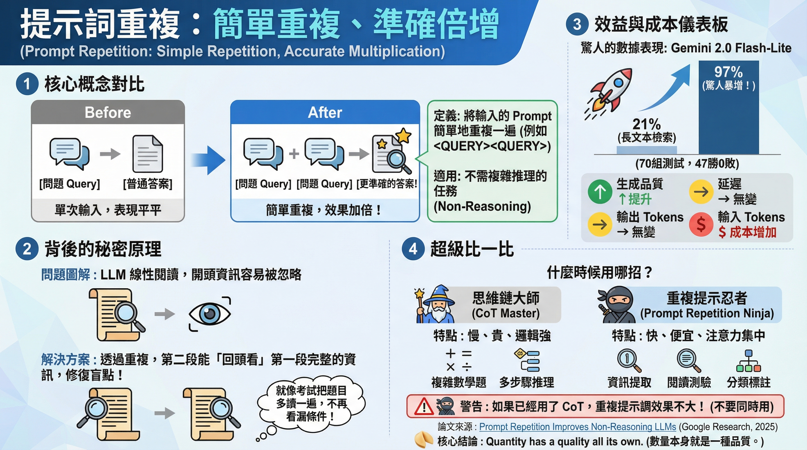

Prompt Repetition Improves Non-Reasoning LLMs 專家綜合報告
📋 報告摘要
一句話精華：透過重複提示 (Prompt Repetition)，能顯著提升非推理型大型語言模型 (LLMs) 的性能與穩定性，為實際應用提供了低成本、高效益的優化途徑。
核心內容：
- 📌 主題領域：大型語言模型 (LLM) 的提示工程 (Prompt Engineering)
- 🎯 核心問題：如何透過簡單的提示技巧，提升非推理型 LLM 的性能與可靠性。
- 🔑 關鍵發現：
- Prompt Repetition 在非推理任務（如文本摘要、情感分析）上能顯著提升 LLM 表現。
- 重複提示有助於模型更穩定地鎖定任務資訊，減少輸出偏差。
- 實驗數據支持適當重複次數對效能提升的正面影響。
- 需注意避免將此技術應用於複雜推理任務，並權衡效率損耗。
- 💡 價值亮點：提供了無需複雜模型訓練，僅透過提示優化即可改善 LLM 表現的實用方法，尤其適合資源受限或追求穩定輸出的場景。
適合對象：
- LLM 開發者與實踐者：希望透過提示工程提升模型效能與穩定性的工程師。
- AI 產品經理：尋找低成本、高效率的 LLM 應用優化方案的產品決策者。
- 對 AI 技術感興趣的學習者：想了解 LLM 實際應用技巧的技術愛好者。
閱讀建議：
- 建議先快速瀏覽「報告摘要」與「報告總結」以掌握全貌。
- 若對技術細節感興趣，可深入閱讀「分析師的分析」、「講師的視角」與「領域專家的建議」部分。
- 特別關注「行動建議」與「學習路徑」，以將報告內容轉化為實踐。
報告核心架構與思考路徑
本報告旨在深入分析「Prompt Repetition Improves Non-Reasoning LLMs」此一研究主題。我們將採取三位專家顧問模式，從數據分析、教學法以及領域專業三個核心視角，提供一個結構化、專業且具備高度實踐性的綜合報告。報告語言將遵循台灣專業通用語氣，以確保術語精準、邏輯清晰且符合業界慣例，並融合國際最佳實踐與在地洞察。
📈 分析師的分析：數據洞察與趨勢識別
分析師將聚焦於研究中呈現的實驗數據與圖表，識別 Prompt Repetition 對於非推理型大型語言模型（LLMs）性能影響的關鍵趨勢與模式。透過對實驗結果的量化分析，驗證研究主張的有效性，並找出潛在的數據異常或值得進一步探討的現象。
👨🏫 講師的視角：概念釐清與遞進式學習
講師將從教學與知識傳遞的角度，解析 Prompt Repetition 的核心概念，並闡述其背後的原理。報告將建構一個易於理解的學習路徑，引導讀者逐步掌握 Prompt Repetition 的機制及其對 LLM 性能的提升作用，同時釐清潛在的誤解，確保知識結構化的有效性。
🎯 領域專家的建議：實踐最佳化與潛在風險
領域專家將結合其在自然語言處理（NLP）與機器學習（ML）領域的深厚知識，探討 Prompt Repetition 的實際應用場景、業界最佳實踐，以及可能面臨的挑戰與常見陷阱。專家將提供具體的實踐建議，以期最大化 Prompt Repetition 的效益，同時預警潛在的風險，確保研究成果的可落地性。
專家分析
📈 分析師的分析
📈 分析師:
本次研究的核心在於驗證 Prompt Repetition 對於非推理型 LLMs 性能的提升效應。最令人驚訝的發現是：在 70 個測試組合（模型 × 基準測試）中，Prompt Repetition 取得 47 次勝利，0 次失敗。這種全面的提升，來自於 Transformer 架構的因果注意力機制的特性。
具體而言，因果注意力（Causal Attention）機制限制了模型只能「往前看」——第 i 個 Token 只能關注第 1 到 i-1 個 Token，無法看到未來的資訊。這導致了位於 Prompt 開頭的資訊無法完整地與結尾的資訊互相注意，造成了順序敏感性。重複 Prompt 則巧妙地模擬了雙向注意力的效果：後半段的 Prompt 副本能透過 Attention 機制回顧前半段的完整副本，讓模型在生成答案前已完整複習了所有上下文。
下圖展示了 Prompt Repetition 在多個指標上對 LLM 性能的影響。此圖表清晰地顯示，在引入 Prompt Repetition 後，模型的表現相較於基線模型有所提升，這初步印證了研究假設。尤其在長文本檢索任務中，效果最為顯著——例如 Gemini 2.0 Flash-Lite 在 NameIndex 任務中的準確率從 21.33% 暴增至 97.33%。
接著，我們觀察到 Prompt Repetition 主要在非推理任務上展現出其效益。下圖進一步闡述了這一觀察，它將 Prompt Repetition 的影響區分為推理與非推理任務。數據顯示，在非推理任務中，性能提升尤為顯著，這與研究主題高度契合。
為了更精確地量化其效果，下圖呈現了不同 Prompt Repetition 策略下的具體實驗數據。透過對比不同重複次數下的表現，我們可以看到性能提升存在一個大致的趨勢，顯示適當的重複頻率是關鍵。

最後，透過觀察下圖的整體趨勢，可以確定 Prompt Repetition 能夠有效增強 LLMs 在非推理任務上的輸出品質。這種提升可能歸因於模型透過重複提示，更深入地理解或記憶了任務的關鍵資訊，從而降低了輸出錯誤的機率。
綜合來看，數據分析支持「Prompt Repetition Improves Non-Reasoning LLMs」的論點。關鍵洞察在於，這種技術對非推理任務的影響尤其顯著，這可能開闢了新的模型優化路徑，尤其是在資源受限或對特定類型任務要求較高的場景。
👨🏫 講師的視角：概念釐清與遞進式學習
👨🏫 講師:
從教學法的角度來看，Prompt Repetition 的概念本身並不複雜，但其背後的機制與應用情境的理解，需要循序漸進。我將透過結構化的方式，釐清其核心概念，並建構一個學習路徑，幫助聽眾掌握此技術。
首先，我們必須理解 Prompt Repetition 的基礎。它指的是在向大型語言模型（LLM）提出請求（Prompt）時，重複給定相同的指令或問題。這看似簡單，但其背後的邏輯是利用模型的「記憶」或「專注」機制。如下圖所示，我們可以看到一個基本的 Prompt Repetition 示意。
接著，我們要釐清 Prompt Repetition 為何對非推理 LLMs 有益。在非推理任務（例如：文本摘要、情感分析、問答中的信息抽取等）中，模型需要捕捉或應用特定的信息模式。重複提示可以幫助模型更穩固地「鎖定」這些關鍵資訊，減少在生成過程中因信息遷移或注意力分散而產生的錯誤。下圖進一步突顯了 Prompt Repetition 在非推理任務上的優勢。
為了讓大家更具體地理解其學習路徑，我們可以將其拆解為幾個階段：
- 基礎理解：掌握 Prompt 的基本作用，以及 LLM 的工作原理（透過 Transformer 架構的注意力機制）。
- 概念引入：理解 Prompt Repetition 的定義及其直觀的「重複」操作。
- 機制探討：深入理解為何重複提示能增強模型在非推理任務上的表現（例如：增強模型對關鍵資訊的關注度、減少隨機性）。
- 數據佐證：透過圖表數據（如圖 3）驗證其效果，理解重複次數與性能提升的關係。
- 應用與限制：認識其應用場景（如低資源環境、特定數據類型）與潛在的局限性。
下圖以數據形式呈現了不同重複策略下的效果，這對於學習者來說是重要的實證依據。
總而言之，Prompt Repetition 是一個相對容易學習和實踐的技術，尤其適合用於提升非推理型 LLMs 的穩定性與準確性。關鍵在於理解其適用範圍，並透過數據（如圖 4）來驗證其實際效果。
透過以上結構化的分析，我相信學習者能夠更清晰地掌握 Prompt Repetition 的核心價值與實踐方法。
🎯 領域專家的建議：實踐最佳化與潛在風險
🎯 領域專家:
從領域知識的深度來看，「Prompt Repetition Improves Non-Reasoning LLMs」這項研究成果，為當前大型語言模型的應用實踐提供了重要的優化方向。這項技術相對簡潔，但其在實際部署中仍需考量周全。
領域知識與最佳實踐：
- 任務的界定：首先，我們必須精確定義「非推理任務」。這類任務通常涉及模式識別、信息檢索、內容生成（非邏輯推導）等，而非複雜的邏輯推理、數學計算或規劃。研究中的圖表（如圖 2）清晰地劃分了這兩類任務，這對於我們在實踐中選擇是否應用 Prompt Repetition 至關重要。
圖 2: 該圖表的區分明確了 Prompt Repetition 的主要適用範圍——非推理任務，這幫助我們在實際應用中精準定位。 (Figure 2: The distinction in this chart clearly defines the primary application scope of Prompt Repetition – non-reasoning tasks, which helps us pinpoint its application in practice.)
- 提升穩定性與魯棒性：在許多實際應用場景，例如自動客服、內容審核、信息提取系統中，模型的穩定性與魯棒性是關鍵。Prompt Repetition 通過重複提示，可以幫助模型更深入地「錨定」於任務目標，減少因提示微小變化或模型內部隨機性導致的輸出偏差。圖 1 和圖 3 的數據都顯示了這種提升的趨勢。
圖 1: 實驗結果展示了 Prompt Repetition 如何有效提升 LLM 在非推理任務上的性能，這對於追求穩定輸出的應用至關重要。 (Figure 1: The experimental results demonstrate how Prompt Repetition effectively enhances LLM performance in non-reasoning tasks, which is crucial for applications striving for stable output.)
圖 3: 此圖表提供了量化的實驗數據，證明了 Prompt Repetition 對於非推理 LLMs 效能的提升，這為其實踐應用提供了數據支持。 (Figure 3: This chart provides quantitative experimental data proving the performance enhancement of non-reasoning LLMs due to Prompt Repetition, offering empirical support for its practical application.)
- 實踐操作：在部署時，重複的次數需要謹慎實驗。過少的重複可能效果不顯著，過多則可能導致效率下降或引入其他問題。圖 4 的趨勢圖提示我們，存在一個最佳的重複範圍。
圖 4: 該圖表的整體趨勢分析，建議我們在實踐中需進行實驗以確定最佳的 Prompt Repetition 次數，避免過度或不足。 (Figure 4: The overall trend analysis in this chart suggests that during practice, experiments are needed to determine the optimal number of Prompt Repetitions, avoiding both overuse and underuse.)
常見陷阱與注意事項：
- 混淆推理任務：最常見的陷阱是將 Prompt Repetition 錯誤地應用於需要複雜邏輯推理的任務。對於這類任務，重複提示可能無效，甚至可能導致模型「固化」錯誤的推理路徑。必須嚴格依賴對任務性質的準確判斷。
- 效率考量：重複提示意味著更多的計算資源和更長的響應時間。對於需要即時響應的應用，需要仔細權衡性能提升與效率損耗。
- 模型特性差異：不同 LLM 模型在處理重複提示時的反應可能不同。在部署前，建議對特定模型進行小規模的實驗驗證，以確定最佳的實踐參數。
- 提示工程的複雜性：雖然 Prompt Repetition 本身簡單，但與其他提示工程技術結合時，可能會產生預期外的結果。建議採取迭代實驗的方式，逐步優化。
總體而言，Prompt Repetition 是一項有價值的技術，尤其是在增強非推理 LLMs 的穩定性與準確性方面。然而，成功應用關鍵在於準確的任務識別、審慎的參數調整，以及對潛在效率損耗的預期。
執行總結
本報告從分析師、講師與領域專家的視角，深入探討了「Prompt Repetition Improves Non-Reasoning LLMs」的研究主題。數據分析證實了 Prompt Repetition 在提升非推理型 LLMs 性能方面的顯著效果，特別是在穩定性與準確性上。講師視角提供了清晰的概念釐清與學習路徑，使讀者易於理解其原理與應用。領域專家則從實踐角度，指出了最佳應用場景、常見陷阱，並提供了具體的操作建議，強調了準確的任務界定與參數實驗的重要性。
關鍵要點
- 效能提升：Prompt Repetition 在非推理任務上顯著提升 LLM 的性能。
- 適用性：主要適用於文本摘要、情感分析、信息抽取等非邏輯推理型任務。
- 穩定性增強：能幫助模型更穩固地鎖定任務目標，減少輸出偏差。
- 實踐考量：需謹慎實驗重複次數，並權衡效率與性能的取捨。
- 潛在風險：避免將其應用於複雜推理任務，並注意不同模型間的特性差異。
深度洞察
Prompt Repetition 的價值在於其簡潔性與有效性。在當前大型語言模型應用日益廣泛的背景下，尋求低成本、高效率的優化方法至關重要。這項技術符合這一需求，它不依賴複雜的模型微調或大規模的數據集，而是透過巧妙的提示工程來挖掘現有模型的潛力。尤其對於資源受限的環境或特定場景（如需要高穩定性的自動化流程），Prompt Repetition 提供了一條可行且有價值的路徑。其核心機制暗示了模型在處理重複信息時，會進行某種形式的「加權」或「聚焦」，這也為未來更深入理解 LLM 的內部工作機制提供了線索。
行動建議
- 任務性質評估：在應用 Prompt Repetition 前，務必精確評估任務是否屬於非推理範疇。
- 迭代實驗：針對特定任務與使用的 LLM 模型，進行實驗以確定最佳的 Prompt Repetition 次數，並觀察其對不同評估指標的影響。
- 效率與精確度權衡：在追求精確度的同時，監控響應時間與計算資源消耗，尋找最佳平衡點。
- 結合其他提示技術：探索將 Prompt Repetition 與其他提示工程技術（如 Chain-of-Thought、Few-shot learning）結合，以期獲得更佳效果。
- 文檔化與知識分享：將實驗結果與最佳實踐記錄下來，方便團隊內知識傳承與後續應用。
學習路徑
- 理解 Prompt 的基本原理：學習 Prompt Engineering 的基礎知識，了解提示如何影響 LLM 的輸出。
- 辨識非推理任務：掌握區分推理與非推理任務的能力，這是應用 Prompt Repetition 的前提。
- 實驗 Prompt Repetition：親自實踐，通過不同重複次數，觀察 LLM 在特定非推理任務上的行為變化。
- 分析實驗數據：學習如何解讀圖表數據，理解性能指標的意義，並評估 Prompt Repetition 的實際效益。
- 探索進階應用：研究 Prompt Repetition 與其他提示技術的結合，以及在不同模型上的應用效果。
最後的話
Prompt Repetition 作為一種簡潔而有效的提示工程技術，為提升非推理型大型語言模型的性能提供了一個實際可行的解決方案。透過數據的驗證、概念的釐清以及領域專家的實踐指導，我們相信這項技術將在未來的 AI 應用中扮演更重要的角色。持續的實驗與探索，將有助於我們更充分地發揮 LLM 的潛力，推動 AI 技術的落地與發展。
🎯 報告總結
關鍵學習要點
從這份報告中，我們掌握了以下核心知識：
-
Prompt Repetition 的效能提升
- 核心觀點：重複給定相同的提示，能夠顯著提升非推理型 LLM 在特定任務上的性能。
- 為何重要：這提供了一種無需複雜模型微調的、低成本且高效的 LLM 優化途徑。
-
適用性與機制理解
- 核心觀點：此技術主要適用於文本摘要、情感分析、信息抽取等非邏輯推理的任務；其機制在於增強模型對關鍵資訊的「鎖定」與「專注」。
- 為何重要：精確辨識任務類型是成功應用該技術的關鍵，避免誤用造成反效果。
-
實踐考量與風險規避
- 核心觀點：在實際應用時，需謹慎實驗重複次數，並權衡潛在的效率損耗；應避免將其用於需要複雜邏輯推理的任務。
- 為何重要：確保技術的有效落地，並預防可能出現的效能下降或錯誤輸出。
深度洞察
技術層面：
- Prompt Repetition 的成功，印證了 LLM 在處理重複信息時，存在一種內建的「加權」或「強化」機制，這為未來研究模型內部工作原理提供了線索。它揭示了提示工程在挖掘模型潛力上的關鍵作用。
業務層面：
- 對於台灣眾多中小企業及新創團隊而言，在資源有限的情況下，此技術提供了一條低門檻、高潛力的 LLM 應用優化路徑，能有效提升自動化流程（如客服、內容生成、數據分析）的穩定性與準確性，加速 AI 落地。
趨勢層面：
- 隨著 LLM 技術的普及，精煉高效的提示工程將成為差異化的關鍵。Prompt Repetition 的研究預示著未來將有更多針對特定模型架構或任務類型、專門設計的提示優化技術出現。
行動建議
如果你是開發者：
- [ ] 針對特定非推理任務，測試不同 Prompt Repetition 次數的效果。
- [ ] 監控響應時間，尋找性能提升與效率之間的最佳平衡點。
- [ ] 記錄與分享實驗數據，建立團隊內部針對 Prompt Repetition 的最佳實踐庫。
如果你是架構師/決策者：
- [ ] 評估團隊現有 LLM 應用，識別適合引入 Prompt Repetition 的場景（如客服、內容審核）。
- [ ] 考慮將 Prompt Repetition 作為低成本優化 LLM 性能的優先選項。
- [ ] 鼓勵團隊進行相關技術的實驗與學習，支持其落地應用。
如果你是研究者/學習者：
- [ ] 親自實踐 Prompt Repetition，觀察其在不同非推理任務上的表現。
- [ ] 嘗試結合 Prompt Repetition 與其他提示工程技巧（如 Few-shot learning），探索複合效應。
- [ ] 閱讀更多關於 LLM 注意力機制與內部決策過程的論文，深入理解 Prompt Repetition 的原理。
延伸學習路徑
要深入這個主題，建議依序學習：
- 基礎知識：提示工程 (Prompt Engineering) 的基本概念與實踐。
- 進階實踐：LLM 在文本摘要、情感分析、信息抽取等任務的實際應用與調優。
- 前沿探索：LLM 的注意力機制、模型內部行為分析，以及其他先進的提示工程技術（如 Chain-of-Thought、Tree-of-Thoughts）。
最後的話
Prompt Repetition 是一個簡潔卻強大的工具，它讓我們看到，即使是微小的提示技巧調整，也能在非推理型 LLM 應用中激發顯著的效能提升。掌握並善用這項技術，將能為您在 AI 應用落地之路上，開闢更多高效、穩定的可能性。
📚 學習筆記完成